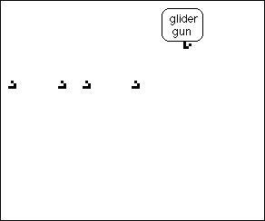

4. Cellular Automata and Fractal Evolution
The Game of Life - the Not Operation
Most collisions between gliders annihilate both gliders.
A data stream of gliders that collides at a right angle with a glider stream of all 1s produces the
not
of the original data stream.

Click the picture to animate.
Return to
Life
.